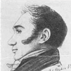

Парни на выезде в Амстер
Самый смешной лид средней длины будет написан ровно в этом месте
Гусь
«Гусь»
Что делал в Арзамасе:
Гоготал и щипался. Пытался драться крыльями.
Кем стал потом:
Жаркое, холодец, подушки.
Сергей Семенович Уваров
«Старушка»
(1786–1855)
Кем был:
«Красавец и баловень аристократических собраний, остроумный, ловкий, веселый, с примесью самолюбия фата, но высокообразованный, истинно просвещенный Уваров» (Блудова) до основания «Арзамаса» жил в Европе, где получил основательное образование: «Вступив в храм учености, узнал он, что одной французской литературы мало. …Начал успевать он в науках, даже усердно принялся за русский язык» (Вигель). Чрезвычайно успешно продвигался по службе, с 1818 года до кончины был президентом Академии наук; добивался расположения покровителей самыми разными способами: «всех кормилиц у Канкриной [жены министра финансов] знает и дает детям кашку» (А. Тургенев — Вяземскому).
Что делал в «Арзамасе»:
Часто предоставлял свой дом и дачу для четверговых арзамасских встреч; был президентом на первом заседании. Писал стихотворения и статьи на французском языке и активно участвовал в арзамасских мистификациях: анонимно издал с Батюшковым и Дашковым брошюру «О греческой антологии» (напечатана в 1820 году), а свою поездку по России в 1817 году изобразил как «желание поклониться трактиру, в котором наше общество приняло свое начало». В начале 1820-х годов пытался возродить «Арзамас».
Что потом:
Стал министром народного просвещения, ужесточил цензуру, создал теорию официальной народности.

Василий Андреевич Жуковский
«Светлана»
(1783–1852)
Кем был:
Ко времени Липецкого потопа — создания «Арзамаса» — уже был прославленным поэтом и переводчиком, «гражданином-песнопевцем в событиях двенадцатого года» (Вяземский), а также объектом литературных нападок и пародий. Приближенный ко двору, Жуковский получал пенсию и мог заниматься литературными трудами, что было торжеством для всего «Арзамаса». Часто уезжал в Дерпт (ныне Тарту), но не терял связи с «Арзамасом» и высылал свои сочинения: «Овсяный кисель» арзамасцы «единодушно провозгласили райским кремом», а по прочтении «Красного карбункула» «сказали в один голос: мы никогда не будем играть в карты! Это непохвально!»
Что делал в «Арзамасе»:
«Благодаря неистощимым затеям Жуковского, „Арзамас“ сделался пародией в одно время и ученых академий, и масонских лож, и тайных политических обществ» (Вигель); главный придумщик арзамасских ритуалов и шуток; изобретатель и классик разных форм литературной «галиматьи». Стремился к точности слова и обладал строгими редакторскими принципами: «Этот Жуковский — злодей; он как медведь: чтобы муху согнать со стиха, стих наповал убьет» (Вяземский); утверждал, что «арзамасская критика должна ехать верхом на галиматье», предписал обсуждать сочинения и самих арзамасцев, «читать друг другу стишки, царапать друг друга критическими колкостями». Всем сердцем принадлежал «Арзамасу»: «Я жил на берегах Эмбаха, в стенах города Юрьева, но душа моя была с вами. Гусынями перелетали мои мысли к незабвенным друзьям моим! И когда я скакал сюда по почте, то в честь „Арзамаса“ всегда приказывал на станциях закладывать лошадей в кибитку мою гусем! Чухонцы дивились моей причуде, комиссары величали меня скотиною, прохожие указывали на меня пальцем, но я был спокоен, я говорил себе с гордостью: „Еду гусем, еду гусем к друзьям моим“» (речь Жуковского при возвращении к обязанностям).
Что потом:
Продолжал много писать и переводить; был учителем русского языка будущей императрицы Александры Федоровны и наставником Александра II; выступал в защиту литераторов, декабристов и других несправедливо обиженных; в письмах Жуковского порою встречается дух арзамасской «галиматьи».
Николай Иванович Тургенев
«Варвик»
(1789–1871)
Кем был:
Получил образование в Германии; имел репутацию радикального вольнодумца; в своем «Сопоставлении Англии и Франции» (1817) доказывал преимущества конституционной монархии: «Англия заставила Европу любить свободу. Там правительство существует для народа, а не народ для правительства». Всю жизнь выступал за отмену крепостного права; планировал издавать политический журнал «Россиянин XIX века», к работе над которым хотел привлечь остальных арзамасцев.
Что делал в «Арзамасе»:
В «Арзамас» был принят поздно (1817), хотя в заседаниях участвовал и до этого; произнес исключительно язвительную вступительную речь о беседчиках («Кто знает! Может быть, арзамасские гуси освободят русскую словесность от варварства „Беседы“. Гуси же однажды спасли и Капитолий»), о которой Жуковский вспоминал: «Лицо его пылало огнем геройства, и голова, казалось нам, дымилась, как Везувий. Извержение черепа воспоследовало, пролилась река лавы». В записке-доносе Фаддей Булгарин писал, что вместе Николай Тургенев и Уваров представляли собой «два прототипа духа сего общества. Все, что не ими выдумано, — дрянь; каждый человек, который не пристает безусловно к их мнению, — скотина; каждая мера правительства, в которой они не принимают участия, — мерзкая; каждый человек, осмеливающийся спорить с ними, — дурак и смешон». Разговоры с ним вдохновили Пушкина на оду «Вольность»; впрочем, Александр Тургенев вспоминал, что однажды Пушкин, обидевшись на критическое замечание, вызвал Варвика на дуэль.
Что потом:
Участник «Союза благоденствия»; был осужден по делу декабристов, из-за чего уехал из России; познакомился в Швейцарии со своей будущей женой маркизой Кларой Виарис, дочерью офицера с Сардинии. Стал видным либеральным мыслителем, написал книгу «Россия и русские». При Александре II был амнистирован, несколько раз ездил в Россию и успел поучаствовать в осуждении крестьянской реформы, о которой мечтал еще в 1810-х.
Александр Федорович Воейков
«Дымная Печурка / Две Огромные Руки»
(1778 (или 1779) — 1839)
Кем был:
Собственная характеристика: «Избран советом немецкого университета в профессоры российской элоквенции, перевозчик дидактических поэм по именному указу Аполлона, последовавшему по прочтении русских „Садов“ его, выворачивает наизнанку Вергилиевы „Георгики“»; язвительный памфлетист (известен стихотворным памфлетом «Дом сумасшедших», где вывел коллег-литераторов); переводил с латыни и французского. По мнению Вигеля, был «мужиковат, аляповат, неблагороден»; хлопотами Жуковского Воейков женился на Саше Протасовой (сестра возлюбленной Жуковского; свадебным подарком стала баллада «Светлана») и был устроен профессором в Дерптский университет (сейчас Тартуский).
Что делал в «Арзамасе»:
Предложение Жуковского принять Воейкова в «Арзамас» было встречено неохотно: арзамасцев нередко раздражали его памфлеты и едкие критические статьи. Батюшков признавался, что не хочет иметь с ним дел, и добавлял: «Гибель тому, кого он хвалит. У него в одной руке кадило с фимиамом, в другой бич сатиры. И к чему ведет это? Один хороший стих Жуковского больше приносит пользы словесности».
Что потом:
В эпиграммах продолжал значиться как «корсар», «разбойник» и «вампир»; в своих журналах практиковал литературную контрабанду. Был уволен из Дерптского университета; был соредактором Николая Греча по «Сыну отечества», а позже пытался спровоцировать журналиста Николая Полевого донести на Греча и Фаддея Булгарина как на декабристов, за что Вяземский назвал Воейкова «доносчиком», а Греч — «величайшим в мире подлецом».

Дмитрий Александрович Кавелин
«Пустынник»
(1778–1851)
Кем был:
Поэт-дилетант, известный своими песнями и романсами; был женат на шотландке Шарлотте Ивановне Белли и знал английский язык; до этого учился в Московском университетском благородном пансионе, где познакомился с А. Тургеневым и Жуковским. По воспоминаниям Вигеля: «Придравшись к прежнему соученичеству, он очень ласкался к Жуковскому и предложил ему печатать его сочинения в типографии своего [Медицинского] департамента». Позже Жуковский начал послание к нему словами: «Кавелин! друг, поэт, директор / И медиков протектор / Я с просьбою к тебе!»
Что делал в «Арзамасе»:
Принятый в 1816 году, Кавелин не стал частью «Арзамаса»: «почти всегда молчал, неохотно улыбался и между нами был совершенно лишний» (Вигель); известна только одна его речь в «Арзамасе». Обязанности Кавелина в подготовке арзамасского журнала Жуковский сформулировал весьма лаконично: «Печатать. Это знает Кавелин».
Что потом:
Участвовал в гонениях на либеральных профессоров Петербургского университета. «Кидает своею грязью в убитого Куницына, обвиняет его в своей вине, то есть в том, что взбунтовались ученики его пансиона, и утверждает, что политическую экономию должно основать на Евангелии», — негодовал А. Тургенев и предлагал выключить Кавелина из «Арзамаса».
Филипп Филиппович Вигель
«Ивиков Журавль»
(1786–1856)
Кем был:
Считался знатоком литературы и театра; происходил из захудалого дворянского рода, отчего, видимо, был еще более обидчив и желчен. Несмотря на образование и острый ум, очень медленно продвигался по службе. Предпочитал мужчин и, по высказыванию А. Пушкина, всегда заканчивал разговоры «толками о мужеложестве»; имел привычку в улыбке стягивать «ярко-красные губы», так что те «становились похожи на круглую вишенку»; соблюдал особый табачный ритуал: «взявши щепотку табаку, как будто клевал по ней пальцами, как птица клюет клювом, когда готовится сказать что-нибудь колкое или забавное» (Блудова).
Что делал в «Арзамасе»:
Принимал участие во многих заседаниях, однако не выступал со своими сочинениями в печати и даже обвинялся в том, что «содержит свой журавлиный нос в некоем поносном бездействии»; запечатлел «Арзамас» в ценных мемуарах, иногда не слишком объективных из-за скверного характера автора. По утверждению Вяземского, «узкость понятий, мелкое чиновничество, доводившее самолюбие его до малодушия, затмевали светлый ум его. <…> В течение жизни он неоднократно ссорился не только с отдельными лицами, но и с целыми семействами, с городами, областями и народами. Не претерпевший никогда особенного несчастия, он был несчастлив сам по себе и сам от себя».
Что потом:
Стал ревнителем официального православия; участвовал в гонениях на Чаадаева; коллекционировал гравюры и литографии.
Александр Сергеевич Пушкин
«Сверчок»
(1799–1837)
Кем был:
Учился в лицее, где познакомился с Жуковским: «Я сделал еще приятное знакомство! С нашим молодым чудотворцем Пушкиным. Я был у него на минуту в Сарском Селе. Милое, живое творенье! Он мне обрадовался и крепко прижал руку мою к сердцу». Тогда же был провозглашен «надеждой нашей словесности»; состоял в переписке с Вяземским и однажды назвал себя «несчастным царскосельским пустынником, которого уж и без того дергает бешеный демон бумагомарания» — между тем круг литературных знакомств Пушкина в это время расширялся и не ограничивался «Арзамасом»: так, он приятельствовал с Шаховским, который оставался главным драматургом своего времени (кроме того, «Пушкину, обожателю актрис и танцовщиц во время оно, нужно было сблизиться с Шаховским, который был кулисным цербером и у которого эти барыни по вечерам съезжались» (Вяземский).
Что делал в «Арзамасе»:
Был объектом всеобщей арзамасской опеки и назидания: «Ахилл и Сверчок, проводя Светлану, сейчас возвратились, и Сверчок прыгает с пастором Ганеманом. Иду усадить его на шесток…» (А. Тургенев — Вяземскому). В ответ на образ жизни Пушкина в Петербурге после окончания лицея Батюшков высказывал пожелание «запереть его в Геттинген и кормить года три молочным супом и логикою». Поэтический дар юного Пушкина не подлежал сомнению — Вяземский просил: «Закажи Сверчку пропищать мне то, что он о моих стихах думает». Был важной частью «Арзамаса», хотя имя Сверчка упоминается в бумагах общества лишь однажды, в 1817 году, а из его речи сохранилось только несколько строк:
О други смелых муз, о дивный Арзамас!
Где славил наш Тиртей кисель и Александра,
Где смерть Захарову пророчила Кассандра…
. . . . . . . . . . . . . . . . . в беспечном колпаке,
С гремушкой, лаврами и с розгами в руке.
(1817)
О други смелых муз, о дивный Арзамас!
Где славил наш Тиртей кисель и Александра,
Где смерть Захарову пророчила Кассандра…
. . . . . . . . . . . . . . . . . в беспечном колпаке,
С гремушкой, лаврами и с розгами в руке.
(1817)
Что потом:
Стал «солнцем русской поэзии» (Одоевский), «нашим всем» (Аполлон Григорьев) и национальным гением (Достоевский).
Константин Николаевич Батюшков
«Ахилл»
(1787–1855)
Кем был:
По воспоминаниям Антонины Блудовой, «небольшого росту, молодой красивый человек, с нежными чертами, мягкими волнистыми русыми волосами и с странным взглядом разбегающихся глаз». К 1810-м годам уже был известным стихотворцем, хотя «по его скромной наружности никак нельзя было подозревать в нем сладострастного поэта. <…> Впрочем… утверждают, что эти сладострастные и роскошные картины, которые мы видим в его сочинениях, были только в воображении поэта, а не в жизни» (М. А. Дмитриев). Участвовал в Заграничных походах, которые называл своей одиссеей. Жуковский восклицал: «Читал ли ты в „Сыне отечества“ маленькое послание Батюшкова к Дашкову? Прекрасно! прекрасно! Этот пипинька превосходный поэт! Зачем черт его понес в службу? Кто тогда станет за него писать?» (1813) Возвращение совпало с душевным кризисом.
Что делал в «Арзамасе»:
Заочно принят в «Арзамас» в день основания как один из первых бойцов против «Беседы» — еще до «Арзамаса» Батюшков нанес «им первый удар и первую рану» (Дашков) в «Видении на берегах Леты» и «Певце в беседе славянороссов». Присылал свои сочинения в «Арзамас» и участвовал в дискуссиях о литературе: «Батюшков здесь. Мы часто бываем вместе и пьем шампанское как воду. <…> До ужина, который был великолепнейший, мы спорили о литературе; Батюшков сразился с Катениным, и чуть было за тебя не подрались — но шампанское всех примирило, и мы у Толстого просидели до пяти часов утра…» (В. Пушкин — Вяземскому). Половину года проводил в деревне и часто болел: «Овидий-капуцин Батюшков здоров, то есть не очень здоров и телом, и душою: в носу насморк, и в сердце, и в уме то же. Он скоро будет посажен в желтый дом моим состраданием. Силы нет видеть, как он капуцинит» (Вяземский).
Что потом:
Сошел с ума, провел в безумии последние 33 года жизни.
Михаил Федорович Орлов
«Рейн / Рейн Усатый»
(1788–1842)
Кем был:
«Красота Михаила Орлова была строгого стиля, более мужественная, более величественная» (Вигель); «либералист»; по мнению Н. Тургенева — филантроп. Хотел, чтобы отличившиеся в школах воспитанники получали знак, который бы «избавил их от телесного наказания навсегда»; хранил у себя запрещенные книги; недолюбливал Карамзина; уверял, что не поклоняется «никаким чертям, кроме Вяземского и Амура» («да и между вами ты [Вяземский] переживешь, вероятно, его в сердце моем»).
Что делал в «Арзамасе»:
«Был одним из ревностнейших членов „Арзамаса“ и в особенности подвигнул его на сериозное дело» (Н. Тургенев); считал, что «свободная стихия достаточно наполняет „Арзамас“, чтобы сделаться в нем преобладающею», и мечтал, чтобы для «Арзамаса» начался бы «тот славный век, где истинное свободомыслие могущественной рукой закинет туман» (по словам Блудова, «хотел завлечь Арзамасское общество в свои якобинские идеи, но замысел его проникнули»). Должен был издавать арзамасский журнал, но затея не удалась. Просил Вяземского чистить его (Орлова) тексты от галлицизмов.
Что потом:
Один из видных деятелей преддекабристских обществ, руководил управой «Союза благоденствия», после волнения в его дивизии в 1822 году отставлен от командования, но оставлен при армии, был арестован после декабристского восстания и определен жить под надзором в своем имении. Написал книгу «О государственном кредите»; получил в наследство завод, изготовлявший цветное стекло.
Степан Петрович Жихарев
«Громобой»
(1787–1860)
Кем был:
Увлеченный театрал с репутацией графомана. «Принадлежал к золотой московской молодежи, ничего не делавшей и всем интересовавшейся, особенно театром и литературой. <…> Плохой драматург, неудачный переводчик», — писал позже журналист Михаил Мазаев. Среди переводов Жихарева — опера «Любовные шутки», комедия «Черт розового цвета» (постановки провалились, а тексты не были напечатаны); трагедия «Артабан», которую князь Шаховской определил как «смесь чуши с галиматьей», не была ни поставлена, ни опубликована. Был исключен из Вольного общества любителей словесности, наук и художеств за многократные пропуски собраний; увлекался конным спортом и коннозаводством, часто бывал на скачках и конных ярмарках.
Что делал в «Арзамасе»:
Перешел в «Арзамас» из «Беседы» и на вступительной церемонии хоронил сам себя. «Он казался мрачен, угрюм, и не знаю, бывал ли он когда сердит или чрезвычайно весел. Его мог совершенно развеселить один только шумный пир, жирный обед и беспрестанно опоражниваемые бутылки», — вспоминал Вигель. Однажды Жихарев расстался с «Арзамасом» на четыре месяца и очень тосковал: «Ни грызущие сердце заботы, ни утомительные труды, ни последующее за ними пьянственное окаянство, ни московский Английский клуб, ни полные груди белокурых московских горничных, ничто не истребляло из памяти моей возлюбленного „Арзамаса“: я тосковал по нем, — не так, как тоскует преподобная Хвостова в неподобных письмах своих о горнем отечестве,— но тосковал с умилением и для славы „Арзамаса“ — в молчании».
Что потом:
Дослужился до должности сенатора; дочь Жихарева — княжна Мария Мещерская (в замужестве княгиня Демидова-Сан-Донато), фрейлина императрицы Марии Александровны и любовница императора Александра III. Прославился мемуарами «Записки современника», которые Лев Толстой использовал при работе над «Войной и миром».
Никита Михайлович Муравьев
«Адельстан / Статный Лебедь»
(1795–1843)
Кем был:
Внук богатого сенатора Федора Колокольцева, сын поэта и просветителя Михаила Муравьева, троюродный брат Батюшкова; с детства был очень серьезен и мечтал быть похожим на античного героя — по слухам, когда мать уговаривала шестилетнего Муравьева станцевать на детском вечере, ответил: «Матушка, разве Аристид и Катон танцевали?» В 1812 году убежал из дома на фронт (ему тогда было 17 лет), участвовал в Заграничных походах 1813–1814 годов; познакомился в Париже с французскими революционерами и стал, по выражению Вигеля, «отчаянным либералом».
Что делал в «Арзамасе»:
Один из самых молодых арзамасцев; вероятнее всего, был принят в общество стараниями Батюшкова, с которым позже имел идеологические разногласия; «горел желанием быть полезным» арзамасскому журналу, куда были бы включены отрывки из его исторических сочинений.
Что потом:
Один из главных декабристских идеологов, основатель Северного общества декабристов (им был составлен проект конституции). По мнению поэта Ивана Дмитриева, участие Муравьева в деятельности Тайного общества отчасти спровоцировало сумасшествие Батюшкова. Был сослан в Сибирь, вместе с братом построил мельницу.

Александр Алексеевич Плещеев
«Черный Вран»
(1778–1862)
Кем был:
Поэт-дилетант; родственник Карамзина; более известен как музыкант и декламатор: «мастер был импровизировать всякую чепуху и представлять в лицах смешных провинциалов, старых женщин и т. п.» (Вяземский). Галломан, перенявший «у французов их поговорки, все их манеры… так что с первого взгляда нельзя было принять его за русского» (Вигель). Жуковский восхищался актерcким талантом Плещеева, в доме которого был частым гостем: «Мы с Плещеевым пишем комедии, каких никто никогда не писывал — половина по-русски, половина по-французски, и все в стихах. Но этого вздору я не намерен к тебе посылать. Дивись только тому, что я играю на театре, пою и танцую в балете в костюме Жука!» (Жуковский — Вяземскому)
Что делал в «Арзамасе»:
Веселил «Арзамас»: «Станем трудиться — и никто ничего не делает. Плещеев смешит до надсаду» (Батюшков). Своих французских стихотворений не печатал, слыл скорее острословом, чем поэтом: «Французское послание Плещеева полно ошибками против языка и хромающими рифмами, но и в нем можно найти несколько хороших стихов и заметить, что оно писано человеком умным» (В. Пушкин). Был не столь активным арзамасцем — в одном из писем А. Тургенева упоминается как «Плещеев, которого имя в арзамасском крещении забыл».
Что потом:
Служил чтецом у вдовствующей императрицы Марии Федоровны; положил на музыку баллады и романсы Жуковского (изданы в 1832 году); не связал карьеру с театром, служил чиновником до 1845 года.
Денис Васильевич Давыдов
«Армянин»
(1784–1839)
Кем был:
«Действительный поэт, генерал-адъютант Аполлона при переписке Вакха с Венерою»; командовал гусарским полком, был инициатором партизанского движения в войне 1812 года. Обладатель роскошных усов и репутации оппозиционера. Сперва писал едкие басни против Александра I, но вскоре перешел на «гусарскую лирику» (которой и прославился: «И, позабыв покой и негу, / В курьерску завалясь телегу, / Гусарские усы слезами обливал»). Был определен в конно-егерскую бригаду, но отказался быть егерем, чтобы не сбривать усы.
Что делал в «Арзамасе»:
Редко участвовал в заседаниях, но пользовался уважением среди арзамасцев как «витязь и певец / Вина, любви и славы» (Воейков) и «по сердцу Вакха человек» (Вяземский); просил Вяземского присылать ему запрещенные книги. Ложные слухи о женитьбе Давыдова ужаснули арзамасцев, особенно расстроив Батюшкова: «Правда ли, что Давыдов женится? не посоветовавшись со мною? это непростительно».
Что потом:
Действительно женился, стал отцом девяти детей. Писал в основном прозу: «…Я пишу много прозою, т. е. записки мои; стихи ничто, как десерт после обеда, рюмка ликера, чашка кофе». Прославился итоговой книгой «Опыт теории партизанского действия» (1821). Служил на Кавказе и болезненно переживал отставку Ермолова.
Василий Львович Пушкин
«Вот / Вот Я Вас! / Вотрушка / Вот Я Вас Опять!»
(1766–1830)
Кем был:
Был намного старше большинства арзамасцев, начал печатать свои стихотворения еще в журналах Карамзина (с конца 1790-х); один из первых борцов с «Беседой», удостоился имени Плевалкина, «понеже он довольно слюняв, чтобы одним плевком затопить всех халдеев». Литератор-дилетант Алексей Пушкин порою распускал комический слух о смерти Василия Пушкина, который поддерживали и в «Арзамасе»: «Да, бедный Пушкин умер в Козельске. Несчастный стих засел у него в горле. <…> Общим мнением положили сделать кесарскую операцию и на всякий страх спасти творение, хотя и на счет творца, но, увы, тесно связанные взаимным родством и сродством, оба сделались жертвою пагубного инструмента» (Вяземский — А. Тургеневу).
Что делал в «Арзамасе»:
Носил звание Старосты; отличался добродушием и доверием — был постоянным объектом шуток; прошел глубоко символичный обряд посвящения в «Арзамас»: погребен под шубами, стрелял в чудище плохого вкуса, целовал сову и омылся липецкими водами. По мнению большинства арзамасцев, часто писал плохие стихи. «Не забудьте старосте Вот Я Вас за стихи его от меня сказать: „Вот я тебя“!» — передавал Блудов; он же просил: «Дай весть о Вяземском и [В. Л.] Пушкине и об их чадах или исчадиях». Впрочем, Василий Львович был не чужд самоцензуре: «Он будет говорить самому себе, не забывайся, Василий Львович Вот Я Вас опять! Если ты опять Староста, то можешь быть легко опять и ватрушкой, и еще чем-нибудь хуже: блином, котелкою, кавардаком или калужским тестом!» (речь Жуковского)
Что потом:
Прославился как дядя Александра Пушкина. Даже при смерти оставался верным идеалам «Арзамаса» — Пушкин-племянник уверял Плетнева, что последней фразой Василия Львовича была «Как скучны статьи Катенина».
Дмитрий Николаевич Блудов
«Кассандра»
(1785–1864)
Кем был:
«Русский Ривароль» (то есть писатель-афорист); дальний родственник поэта Гавриила Державина; двоюродный брат драматурга Владислава Озерова. Служил в Коллегии иностранных дел, был в фаворе у императора Александра I; вольтерьянец (но Французскую революцию не одобрил); министр Иоанн Каподистрия называл Блудова «перлом русских дипломатов».
Что делал в «Арзамасе»:
«Государственный секретарь бога Вкуса при отделении хороших сочинений от бессмысленных и клеймении сих последних печатью отвержения» (Воейков); один из основателей «Арзамаса»; искусный оратор и едкий эпиграммист («О Блудов, наш остряк! / Завистников нахальных / И комиков печальных / Непримиримый враг!» (Вяземский); «самый исступленный карамзинист, веровавший в „Бедную Лизу“, как в Варвару великомученицу» (Греч). Вяземский признавался А. Тургеневу: «Похвала Блудова-Кассандры — конфертатив моему честолюбию», Пушкин же считал вкус Кассандры «односторонним». Иногда Блудов забывал дома книги для собраний: «Члены хотели продолжать критический разбор известных Парамифий, начатый в прошедшем заседании, но член Кассандра, временный хранитель сих приятных произведений ума человеческого, благоволил бесстыдно забыть их дома, — и их превосходительства с прискорбием принуждены были повесить носы».
Что потом:
Входил в Следственную комиссию по делу декабристов, что многие бывшие арзамасцы восприняли как предательство, Александр Тургенев отказывался подавать ему руку. Издал неоконченный том «Истории государства Российского» Карамзина. Впоследствии писатель и путешественник Егор Ковалевский издал книгу «Граф Блудов и его время», в которую вошла значительная часть блудовских афоризмов.
Александр Иванович Тургенев
«Эолова Арфа»
(1784–1846)
Кем был:
Некогда однокурсник Жуковского по Московскому пансиону; учился в саксонском Геттингене (оставил много записей о Германии, где отмечал, например, что немецкие крестьяне постоянно носят с собой скляночку с водкой и вообще пьют больше русских, но постепенно и потому «не упиваются»). Был заметным государственным деятелем, к которому знакомые часто обращались за покровительством; поспособствовал зачислению Пушкина в лицей (и после огорчался «преступной праздности» и «площадному вольнодумству» своего протеже). Историк-источниковед (путешествуя, всегда бывал в европейских архивах и библиотеках); был «частицей… магнита, привлекающего [Вяземского] к берегам Невы» (по признанию последнего).
Что делал в «Арзамасе»:
Был страстным полемистом (готов был обсуждать и политику, и литературу); много ел. По воспоминаниям Антонины Блудовой: «за обедом, когда он глотал все, что находилось под рукою, — и хлеб с солью, и пирожки с супом, и бисквиты с вином, и конфеты с говядиной, и фрукты с майонезом, без всякого разбора, без всякой последовательности, как попадет, было бы съестное; а после обеда поставят перед ним сухие фрукты, пастилы и т. п., и он опять все ест, между прочим, кедровые орехи целою горстью за раз, потом заснет на диване и спит и даже храпит под шум разговора и веселого смеха друзей». Долго не отвечал на письма Вяземского, и тот изобрел наказание («Я так на тебя зол, Тургенев, что если бы от меня зависело, то целые два часа не дал бы тебе куска в рот и по крайней мере двадцать минут держал под бессонницею»); по воспоминаниям Жуковского, «плясал до упаду».
Что потом:
После того как его брата Николая Тургенева осудили по делу декабристов, уехал вместе с ним в Англию и после долго скитался по Европе, приезжая в Россию только ненадолго; был постоянным корреспондентом и ценимым собеседником Пушкина; в 1837 году сопровождал гроб с телом поэта в Святогорский монастырь; был знаком и переписывался с Гете, Шатобрианом, Шеллингом, Мюссе, Бальзаком, Мериме.
Официантка
«Официантка»
Что делал в Арзамасе:
Принял участие в собраниях лишь единожды, в 1817 году. По протекции дяди Василия Львовича.
Произнес вступительную речь, от которой остались только строчки: Венец желаниям! Итак, я вижу вас,
О други смелых Муз, о дивный Арзамас! Написал матерную “Тень Баркова”.
Кем стал потом:
Зав. отделением официанток

Петр Андреевич Вяземский
«Асмодей»
(1792–1878)
Кем был:
Поэт, воспитанник Карамзина, с детства был знаком и дружил со многими литераторами («Жуковский изленился и без вас ничего писать не хочет» (Дашков). Жил в Москве, где вместе с Василием Пушкиным сетовал о состоянии словесности и скучал по «Арзамасу»: «Здесь каждый день бал, но сердце нерадостно. Как волка ни корми, а он все в лес глядит. Надобно действовать, но где и как? Наша российская жизнь есть смерть. Какая-то усыпительная мгла царствует в воздухе, и мы дышим ничтожеством. Я приеду освежиться в „Арзамасе“ и отдохнуть от смерти. Ждите меня с пуком планов».
Что делал в «Арзамасе»:
Писал сатиры и эпиграммы: «Читано было несколько эпиграмматических излияний отсутствующего члена Асмодея, и члены, восхищенные ими, восклицали: экой чорт!» Настаивал на издании арзамасского журнала: «Жуковский с ума сошел на том, чтобы выдавать по книжке в год. Дело ли тут до перепалки, когда надобно дуть картечью? Не раз в год, а каждый месяц, каждую неделю, каждый день, если можно, бейте по щекам эту посадскую бабу, зовомую публикою! Авось очнется!» Часто отсутствовал в Петербурге, потому вел большую переписку с арзамасцами и огорчался, когда те не отвечали: «Где ты, где ты? Что ты, что ты? Как ты, как ты? <…> Когда ты не писал ко мне с полгода, я уже не знаю, что тебе сказать, как тебя пристыдить» (Тургеневу). Впрочем, и сам писал не ко всем: «Писать ему [Жуковскому] — то же, что в вист играть с деревянным мужичком: ни ответа, ни привета!»
Что потом:
Вяземского называли декабристом без декабря; он «пережил и многое и многих» и дожил до конца 1870-х годов; начав с радикального либерализма, закончил службой в цензурном ведомстве. На закате жизни Вяземский-консерватор идеализировал арзамасскую и пушкинскую эпоху как утраченный «золотой век».
Петр Иванович Полетика
«Очарованный Челнок»
(1778–1849)
Кем был:
Сын турчанки (пленена при взятии Очакова) и врача из старинного украинского рода; дипломат; «проплыл по земле и воде все климаты Европы и Америки» (был советником посольства и служил в дипломатических миссиях в Стокгольме, Филадельфии, Рио-де-Жанейро, Мадриде, Неаполе и Лондоне). Англоман и американофил, писал книги о США. Выглядел «опрятно и изысканно», но старше своих лет и из-за «одержимости сильной англоманией» был «похож на квакера или методиста» (по Вигелю). Автор афоризма «В России от дурных мер, принимаемых правительством, есть спасение: дурное исполнение».
Что делал в «Арзамасе»:
По личным и дипломатическим делам часто отсутствовал в Петербурге, на заседаниях «Арзамаса» появлялся редко, по мнению Вигеля — совсем не вписывался в общество («…ему не было еще сорока лет, а казалось гораздо за сорок, и потому он не совсем подходил под стать к людям, из коих составлялась не академия, а общество довольно молодых еще, пристойных весельчаков»). Тем не менее А. Пушкин записал в дневник: «Я очень люблю Полетику». По мнению Дашкова, совершил путешествие в Шотландию, сидя на империале кареты (то есть снаружи).
Что потом:
Входил в состав Верховного уголовного суда по делу декабристов; был президентом Общества лесного хозяйства; был членом Американского философского общества в Филадельфии.
Дмитрий Васильевич Дашков
«Чу!!!»
(1789–1839)
Кем был:
Дипломат; критик и литератор; страстный любитель античной культуры, знал греческий язык и занимался переводами. Несмотря на замкнутость, угрюмость и заикание, оживлялся в кругу друзей-арзамасцев — был блестящим полемистом и оратором. «Вечная борьба с самим собою, в которой почти всегда оставался он победителем, проявлялась и в речах его, затрудняла его выговор: он заикался. Когда же касался важного предмета, то говорил плавно, чисто, безостановочно; та же чистота была в душе его, в слоге и даже в почерке пера» (Вигель).
Что делал в «Арзамасе»:
Один из основателей «Арзамаса»; ранее — президент Вольного общества любителей словесности, наук и художеств, откуда был исключен за шутливый панегирик поэту Дмитрию Хвостову. Литературную полемику с беседчиками (Шишковым, Хвостовым и Шаховским и др.) продолжил в иронических сочинениях и пародийных речах в «Арзамасе»; доказал бессилие «Беседы» с помощью алгебраической формулы и говорил Старушке-Уварову: «Плюйте на врагов „Арзамаса“ и рассудка и не страшитесь грозящей нам ненависти славянофилов».
Что потом:
Стал важным государственным деятелем (с 1832 года министр юстиции); вместе с Уваровым участвовал в подготовке Цензурного устава 1828 года, пришедшего на смену «чугунному» уставу Шишкова.
Дмитрий Петрович Северин
«Резвый Кот»
(1792–1865)
Кем был:
По слухам, тайный сын поэта Ивана Дмитриева (на самом деле нет). Учился вместе с П. А. Вяземским в Петербургском иезуитском пансионе патера Чижа (где за тщедушность был прозван Котенком); в дальнейшем — дипломат (Н. И. Тургенев называл его «дипломатическим щенком»). Автор двух басен; любил собак: «Скажи Северину, что его принцесса [собака Северина] здорова и, кажется, изменила ему для меня. Блудов называет ее очень забавно псом Резвого Кота» (Батюшков).
Что делал в «Арзамасе»:
Писал стихотворные экспромты и мурлыкал: «Долго скитался он в краях отдаленных и принужден был сообщаться с друзьями своими одним письменным мурлыканьем, которое часто пропадало на почте. Наконец, мурлычит он непосредственно в слух милых своих собеседников; с растроганным сердцем говорят они ему: кись, кись».
Что потом:
Поругался с Пушкиным и отказался заступаться за него накануне высылки из Одессы: «…поэт-африканец был в Одессе у Северина, который сказал, чтобы он не ходил к нему; обошелся с ним мерзко, и африканец едва не поколотил его» (А. Тургенев — Вяземскому). Стал тайным советником и успешным дипломатом; вторым браком женился на баронессе.